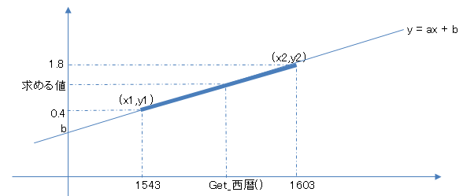

void カスタム::On_被ダメージ時(int 武将番号, int ダメージ兵数) {
}
void カスタム::On_被ダメージ時(int 武将番号, int ダメージ兵数) {
// デバッグのみ。
int iBushouID = 武将番号-1;
if ( 0 <= iBushouID && iBushouID < 最大数::武将情報::配列数 ) {
デバッグ出力 << Get_名前(iBushouID) << endl;
デバッグ出力 << ダメージ兵数 << endl;
}
}
void カスタム::On_被ダメージ時(int 武将番号, int ダメージ兵数) {
// 誰も兵数０にならない。
int iDamagedBushouID = 武将番号-1;
if ( 0 <= iDamagedBushouID && iDamagedBushouID < 最大数::武将情報::配列数 ) {
if ( p武将情報[iDamagedBushouID].兵数 < 1 ) {
p武将情報[iDamagedBushouID].兵数 = 1;
}
}
}
static int iAttackBushouID = -1;
static int iAttackMethodID = -1;
void カスタム::On_攻撃方法決定時《戦争画面》(int 主体武将番号, int 客体武将番号, 攻撃方法決定時パラメタ型 パラメタ) {
// 鉄砲攻撃を通じなくする。よって、攻撃者や攻撃方法をここで控えておく
int iBushouID = 主体武将番号-1;
int iTargetID = 客体武将番号-1;
iAttackBushouID = iBushouID; // グローバル用にコピー
iAttackMethodID = パラメタ.攻撃方法番号;
// 武将番号範囲チェック
if ( (0 <= iBushouID && iBushouID < 最大数::武将情報::配列数) &&
(0 <= iTargetID && iTargetID < 最大数::武将情報::配列数) ) {
if ( iAttackMethodID == 攻撃方法::鉄砲 ) {
デバッグ出力("⇒鉄砲" );
}
}
}
void カスタム::On_被ダメージ時(int 武将番号, int ダメージ兵数) {
// 控えておいた直前の情報が「鉄砲攻撃」ならその攻撃方法によるダメージを修復することでダメージをなかったことにする。
int iDamagedBushouID = 武将番号-1;
if ( 0 <= iDamagedBushouID && iDamagedBushouID < 最大数::武将情報::配列数 ) {
if ( iAttackMethodID == 攻撃方法::鉄砲 ) {
デバッグ出力 << "鉄砲攻撃は効かない" << endl;
デバッグ出力 << "攻撃者:" << Get_名前(iAttackBushouID) << endl;
p武将情報[iDamagedBushouID].兵数 += ダメージ兵数; // 受けたダメージ分だけ元へと戻す。
}
}
// 攻撃者や攻撃方法は必ずクリアしておく。攻撃者が居ない場合に、前の値のまま処理してしまうのを防止するため。
iAttackBushouID = -1;
iAttackMethodID = -1;
}
void カスタム::On_戦争終了() {
// 念のためのクリア。
iAttackBushouID = -1;
iAttackMethodID = -1;
}
例③同じですが、鉄砲の威力を鉄砲伝来からの年月で変化させる例となります。

static int iAttackBushouID = -1;
static int iAttackMethodID = -1;
void カスタム::On_攻撃方法決定時《戦争画面》(int 主体武将番号, int 客体武将番号, 攻撃方法決定時パラメタ型 パラメタ) {
// 例③と同じソースを記述のこと
}
// 1543～1603年の間で、その時の西暦をもとに、0.4～1.8の値に変換したものを返す。
double Get鉄砲強さ係数() {
const int MinPowerYear = 1543; // 伝来の年
const int MaxPowerYear = 1603; // 1603年で鉄砲は成熟を見ると仮定。
const double minPowerCoef = 0.4; // 最初は0.4倍
const double maxPowerCoef = 1.8; // 最後は1.8倍
const double x2 = MaxPowerYear;
const double x1 = MinPowerYear;
const double y2 = maxPowerCoef;
const double y1 = minPowerCoef;
// 入門ということで一次方程式 y=ax+b
// b = y-ax
// ゼロ除算防止。maxとminに同じ年(もしくは同じ力)が設定されている!!
if (x2 == x1 || y2 == y1 ) { return 1; }
double a = (y2 - y1) / (x2 - x1); // 傾き
double b = (y1 - a*x1); // 切片
デバッグ出力 << a << endl;
デバッグ出力 << b << endl;
// 今求めたy = ax+bの線上における、x=Get_西暦()の時の Ｙの値が 鉄砲の強さの係数となる。(中学生の数学。一次方程式)
double x = Get_西暦();
double y = a*x + b; // ax+bという式。xが西暦の時、yの鉄砲の力を求めよ
// 実際にはyが0.4～1.8の間の線分(CLAMP処理)
if (y < minPowerCoef ) { y = minPowerCoef; }
else if (y > maxPowerCoef) { y = maxPowerCoef; }
return y;
}
void カスタム::On_被ダメージ時(int 武将番号, int ダメージ兵数) {
// 控えておいた直前の情報が「鉄砲攻撃」なら、その瞬間の「西暦」に応じて鉄砲のダメージの強さを変更する
int iDamagedBushouID = 武将番号-1;
if ( 0 <= iDamagedBushouID && iDamagedBushouID < 最大数::武将情報::配列数 ) {
if ( iAttackMethodID == 攻撃方法::鉄砲 ) {
double dダメージ = double(ダメージ兵数) * Get鉄砲強さ係数();
int 新ダメージ = (int)round(dダメージ);
// アンダーフロー等を起こさないように一旦int
int 兵数 = p武将情報[iDamagedBushouID].兵数;
兵数 += ダメージ兵数; // 天翔記のダメージは無しにして…
兵数 -= 新ダメージ; // 新ダメージの方を採用
if (兵数 < 0) {
兵数 = 0;
}
// 計算し終わったので、武将の兵数として代入
p武将情報[iDamagedBushouID].兵数 = 兵数;
}
}
// 攻撃者や攻撃方法は必ずクリアしておく。攻撃者が居ない場合に、前の値のまま処理してしまうのを防止するため。
iAttackBushouID = -1;
iAttackMethodID = -1;
}
void カスタム::On_戦争終了() {
// 例③と同じソースを記述のこと
}